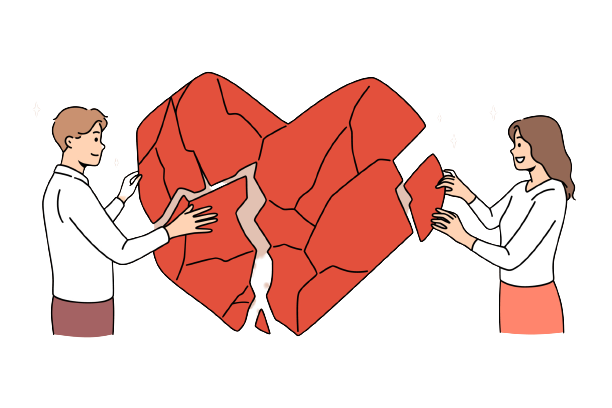
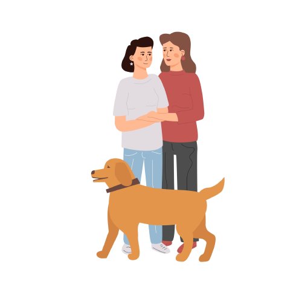
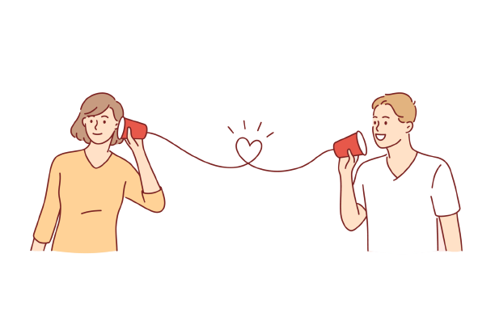
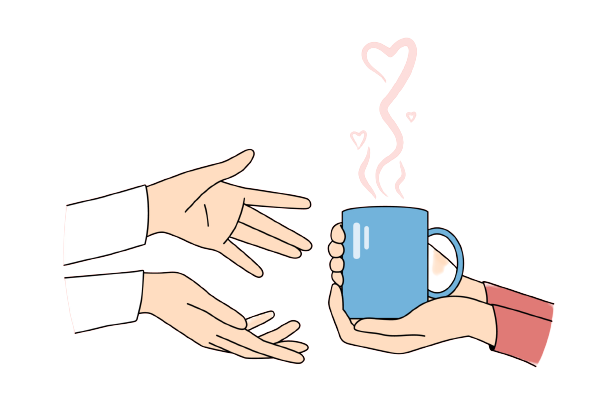
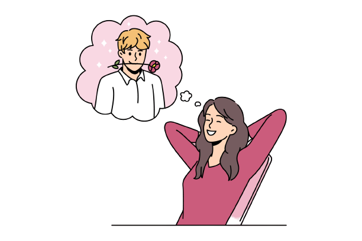
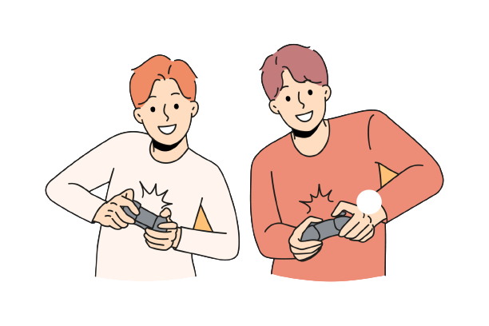
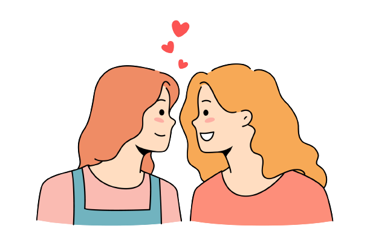

What are the 5 love languages?
We all give and receive love in 5 different ways:
Words of affirmation, Acts of service, Receiving gifts,
Quality time, and Physical touch. These are called ‘love
languages’ - a concept created by Dr. Gary Chapman through
his long-time work as a marriage counsellor.
Different people with different personalities give and
receive love in different ways. By learning to recognize
these preferences in yourself and in your loved ones, you
can learn to identify the root of your conflicts, connect
more profoundly, and truly begin to grow closer.


1. Words of affirmation

When words of affirmation is your love language, words
build you up. You thrive on spoken affection, praise,
encouragement, and compliments. Harsh words and criticism
can bother you for a long time.
2. Acts of Service

Anything that your partner does willingly to ease your
workload is a sign of love to you. You feel cared for
when your partner vacuums before you get to it or makes
you breakfast as a surprise. On the other hand, broken
promises or laziness can make you feel unimportant.
3. Receiving gifts

When you speak this love language, a thoughtful gift
shows to you that you are special. In contrast, generic
gifts and forgotten special events have the opposite
effect. This love language isn’t necessarily materialistic
– it could be as simple as receiving your favourite snack
after a bad day.
4. Quality time

To you, nothing says you’re loved like undivided attention.
When your partner is truly present (and not looking at their
phone), it makes you feel important. Failure to actively
listen or long periods without one-on-one time can make you
feel unloved.
5. Physical touch

Holding hands, kisses, hugs, and other touches are your preferred
way to show and receive love. Appropriate touches convey warmth
and safety, while physical neglect can drive a wedge between you
and your partner.